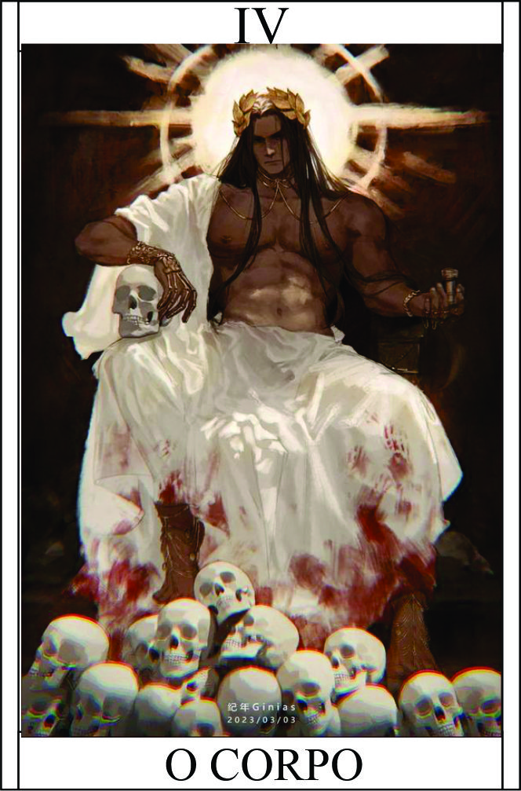

YO
Têndencia: Maligno
Passiva - Maestria Corporal Yo:
A passiva "Maestria Corporal" concede ao personagem o controle total sobre sua própria massa, corpo e sangue. Essa habilidade extraordinária permite que o personagem manipule seu corpo de maneiras impressionantes, adaptando-se às situações e fortalecendo-se durante o combate.
Legado 1 - Metamorfose:
Ao ativar a habilidade "Metamorfose", o personagem pode alterar sua forma física, moldando-se em diferentes estruturas e se adaptando às necessidades do momento. Ele pode aumentar sua massa para ganhar resistência e poder destrutivo, ou diminuir sua massa para se tornar mais ágil e evasivo. Além disso, pode reformar partes danificadas do corpo, acelerando a regeneração e recuperando-se de ferimentos.
Podendo deixar um atributo corporal no maximo ultrapassando os limites.
personagem precisa estar em um estado de concentração total e ter uma quantidade suficiente de energia vital..
Legado 2 - Manipulação Sanguínea:
Ao ativar a habilidade "Manipulação Sanguínea", o personagem adquire controle absoluto sobre o sangue, permitindo que o manipule de maneiras diversas. Ele pode solidificar o sangue em armas afiadas, criar escudos protetores, lançar projéteis de sangue ou até mesmo controlar o fluxo sanguíneo de outras pessoas, causando desequilíbrios e enfraquecimento.
Dependendo da situação que pedi, precisa ver com mestre. Tudo depender do sucesso dos dados.
O personagem precisa estar em contato direto com o sangue, seja o seu próprio ou o de outra pessoa.
Legado 3 - Gravidade Interna:
Ao ativar a habilidade "Gravidade Interna", o personagem pode manipular a própria massa corporal, aumentando ou diminuindo sua gravidade interna. Isso lhe confere maior estabilidade e poder de impacto quando aumenta a gravidade, permitindo que ele execute golpes devastadores. Por outro lado, diminuir a gravidade interna o torna mais ágil e veloz, possibilitando manobras acrobáticas e esquivas impressionantes.
Dano adicional + 10 ou +2 Ação ou esquiva
personagem precisa estar em uma área com presença de gravidade.
Legado 4 - Fusão Celular:
Ao ativar a habilidade "Fusão Celular", o personagem pode fundir-se temporariamente com outra pessoa ou ser vivo. Durante a fusão, ele compartilha habilidades, conhecimentos e até mesmo aspectos físicos com o alvo, aumentando suas capacidades e criando uma sinergia poderosa. Essa habilidade permite que o personagem acesse habilidades únicas do alvo e amplie suas próprias capacidades de forma significativa.
O alvo precisa fazer teste de resistencia, você poderá entrar dentro do alvo, e gasta skill dele | ou fortalecendo aliado e aprimorando skill
Condição:
personagem precisa estar em contato direto com outra pessoa ou ser vivo.